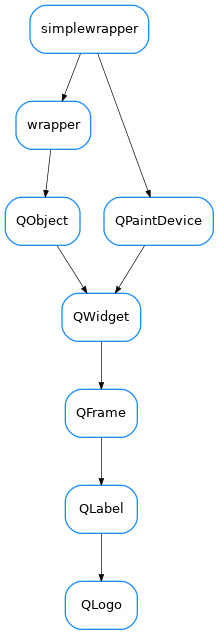

QLogo¶

-
class
QLogo(parent=None, designMode=False)[source]¶ Bases:
PyQt5.QtWidgets.QLabel-
classmethod
getQtDesignerPluginInfo()[source]¶ Returns pertinent information in order to be able to build a valid QtDesigner widget plugin.
The dictionary returned by this method should contain at least the following keys and values:
‘module’ : a string representing the full python module name (ex.: ‘taurus.qt.qtgui.base’)
‘icon’ : a string representing valid resource icon (ex.: ‘designer:combobox.png’)
‘container’ : a bool telling if this widget is a container widget or not.
This default implementation returns the following dictionary:
- { ‘module’‘taurus.qt.qtgui.base’,
‘group’ : ‘Taurus Widgets’, ‘icon’ : ‘logos:taurus.svg’, ‘container’ : False }
- Return type
- Returns
a map with pertinent designer information
-
classmethod